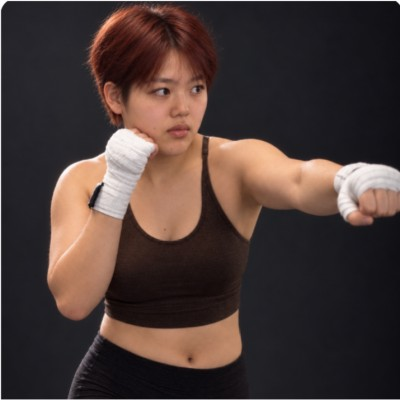

|
Wanning He
I build generative models of human motion, with sports as my testbed.
I'm a master's student in Computer Science at Dartmouth College, where I work in the Visual AI Lab advised by Prof. Yu-Wing Tai.
Before Dartmouth, I studied statistics (M.S., Shanghai University of Finance and Economics) and mathematics (B.S., Northeastern University, China),
and spent two years as a quantitative researcher at Fourier Capital, a quantitative hedge fund.
I am applying to PhD programs for Fall 2027.
Email /
CV /
GitHub /
Blog
|

|
News
| 11.2026 | Awarded Dartmouth's Class of 1961 Arts Initiative Fund for In Her Corner, a photography project on women in boxing. |
| 10.2026 | Won First Prize at two NYC hackathons: VAST Builders Challenge (FightLens) and Daytona HackSprint (Just Standup); featured in Dartmouth CS Kudos: Fall 2026. |
|
Research
My research interests lie in building intelligent machines that can perceive, understand, and generate human motion in the dynamic physical world, with sports as a primary testbed.
* indicates equal contribution.
|
|
|
FightLens: Real-Time Combat Sports Analysis
First Prize, VAST Builders Challenge, New York City, 2026
demo
/
code
A real-time MMA viewing assistant: fighter tracking, pose overlays, received-strike heatmaps, and evidence-based event analysis.
|
|
|
Just Standup: Exercise Anywhere, Anytime
First Prize, Daytona HackSprint w/ Arize AI, New York City, 2026
devpost
No equipment, no place, no coach: only a phone. Boxing with the phone's motion sensors, the city as a gym, and an AI 3D coach.
|
Awards and Funding
| 2026 | Class of 1961 Arts Initiative Fund ($3,211) for In Her Corner | Dartmouth College |
| 2026 | First Prize (team, ~$6,950), VAST Builders Challenge for FightLens | New York City |
| 2026 | First Prize (team, $3,000), Daytona HackSprint w/ Arize AI for Just Standup | New York City |
| 2026 | Both hackathon wins featured in Kudos: Fall 2026 | Dartmouth CS |
| 2026 | NSF ACCESS Discover Allocation (PI) | NSF ACCESS |
| 2026 | OpenAI Researcher Access Program ($1,000 API credits) | OpenAI |
| 2026 | Merit Scholarship (100% tuition) | Dartmouth College |
| 2025 | Tuition Scholarship (75% tuition) | Dartmouth College |
| 2021 | University-level Outstanding Student (top 3%) | China |
| 2019 | Provincial Outstanding Graduate (top 0.2%) | China |
| 2017 | National Scholarship (top 0.2%, ~$1,100) | China |
|
Teaching
|
Teaching Assistant, Machine Learning and Statistical Analysis (COSC 274), Fall 2026 and Winter 2026
Teaching Assistant, Graph-based Machine Learning (COSC 89.39/189.39), Spring 2026
Teaching Assistant, Deep Learning (COSC 78/278), Fall 2025
|
Service
|
Journal Reviewer, International Journal of Computer Vision (IJCV), 2026
|
Beyond Research
Outside the lab, I'm usually training or outdoors.
Sports: weightlifting, Brazilian jiu-jitsu (Jiangsu Championship silver), boxing, CrossFit, climbing
Outdoors: diving, hiking, camping, travel
Creative: In Her Corner, a photo series on women in boxing · sports vlog (190K+ views)
|
|